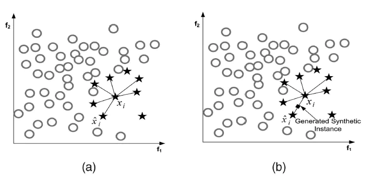
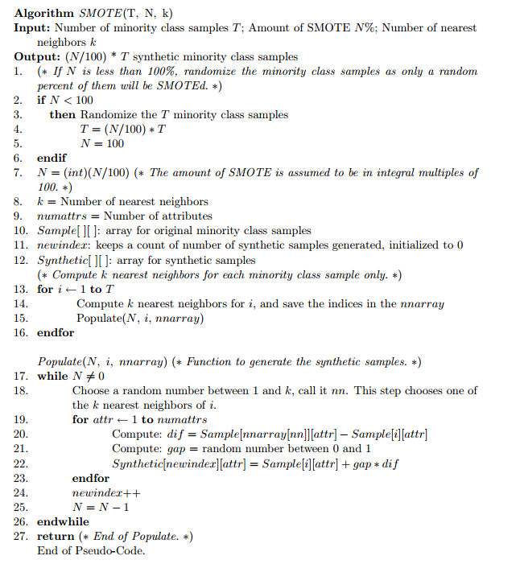

SMOTE算法
SMOTE（Synthetic Minority Oversampling Technique），合成少数类过采样技术．它是基于随机过采样算法的一种改进方案。
算法思想
SMOTE算法的基本思想是对少数类样本进行分析并根据少数类样本人工合成新样本添加到数据集中。
算法流程
对于少数类中每一个样本\(x\)，以欧氏距离为标准计算它到少数类样本集中所有的样本距离，得到\(k\)近邻
根据样本不平衡比例设置一个采样比例以确定采样倍率\(N\)，对于每一个少数类样本\(x\)，从其\(k\)近邻中随机选择若干个样本，假设选择的近邻为\(x_n\)。
对于每一个随机选出的近邻\(x_n\)，分别与原样本按照如下的公式构建新的样本: \[ x_{new} = x + rand(0,1)\times (\tilde{x}-x) \]

算法伪代码

算法缺陷
- \(k\)邻近的选择：如何选择\(k\)才能使算法最优是未知的，需要反复的测试。
- 分布边缘化为题：SMOTE无法克服非平衡数据集的数据分布问题，如果一个负类样本处在负类样本集的分布边缘,则由此负类样本和相邻样本产生的“人造”样本也会处在这个边缘,且会越来越边缘化,从而模糊了正类样本和负类样本的边界,而且使边界变得越来越模糊。这种边界模糊性,虽然使数据集的平衡性得到了改善,但加大了分类算法进行分类的难度．